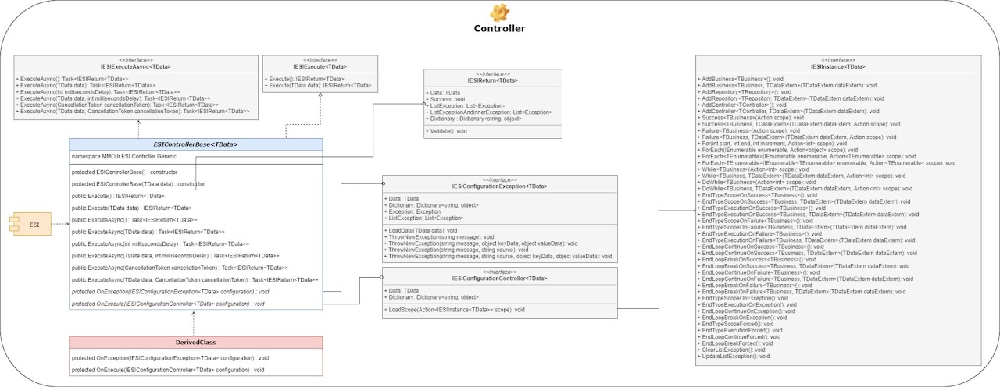

ESI is a new and simple way of Object Oriented Programming. Even for those who still don't know the Concepts and Principles of Object Orientation, they will learn easily. With a very simple structure and easy application, ESI meets the 5 Principles S.O.L.I.D.. ESI will change your way of thinking Programming.
EXECUTE SCOPE INSTANCES
Last Version 9.x.x
ESI Framework
5 Principles S. O. L. I. D.
- S — Single Responsibility Principle
- O — Open-Closed Principle
- L — Liskov Substitution Principle
- I — Interface Segregation Principle
- D — Dependency Inversion Principle
- Object Oriented Program
- Clean Code
- Program Without IFs
- Program Without Try Catch
- Fully Structured and Uncoupled Program
ESI Structure
ESI is Composed of 3 Basic Structures:

- ESIControllerBase
- must implement the Method protected abstract void OnExecute(IESIConfigurationController configuration); - ESIBusinessBase
- must implement the Method protected abstract void OnExecute(IESIConfigurationBusiness configuration); - ESIRepositoryBase
- must implement the Method protected abstract void OnExecute(IESIConfigurationRepository configuration);
ESI Flow
ESI Flow
ESI contemplates 2 types of Transactions
- Distributed with Transaction Scope in System.Transactions;
- Local with Transaction of Own Connection in System.Data.
ESI makes Transactions available through the Attributes:
- ESITransactionScope
- ESITransactionLocal